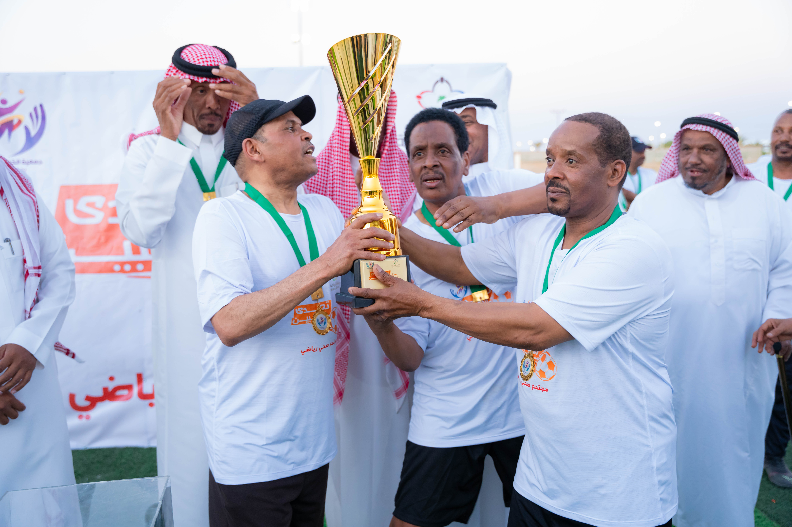
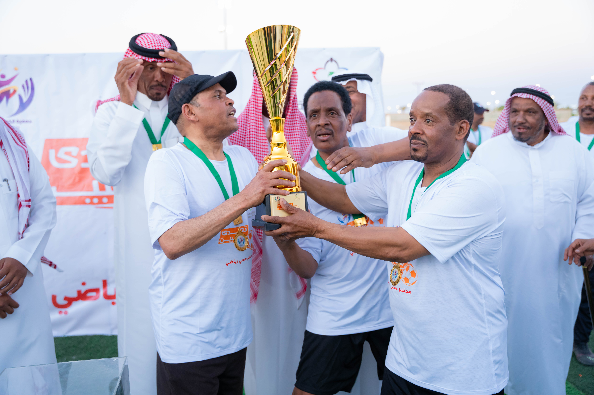

مشاريعنا
سباق الجري
نفذت الجمعية باكورة برامجها لعام 2025 م برنامج سباق الجري بمحافظة الحائط يوم السبت 26 أبريل برعاية محافظ الحائط الاستاذ: فهد صنيدح الصنيدح وبحضور مساعد مدير مكتب فرع وزارة الرياضة بمنطقة حائل الاستاذ محمد الدرعان وبالشراكة مع الدوائر الحكومية بالمحافظة وعدد من الجهات غير الربحية بأركان تعريفية وأعلن سعادة المحافظ انطلاق السباق بمسافة 7 كم وكرم الفائزين بالمراكز العشر الأولي وشركاء النجاح والداعمين للبرنامج.
تفاصيل المشروع →
مباراة تحدي الطيبين لكرة القدم
نفذت الجمعية برنامج تحدي الطيبين لكرة القدم لعام 2025 م بمحافظة الحائط يوم الأحد 08 يونيو على شرف رئيس بلدية محافظة الحائط المكلف الاستاذ: مرعيد بن على الريمان وبالشراكة مع الدوائر الحكومية بالمحافظة وعدد من الجهات غير الربحية تجمع بين أشهر ملاعب كرة القدم بالحائط قديماّ ملعب سعد وملعب القصير وتهدف إلى العودة لممارسة الرياضة لتحسين جودة الحياة وتجمع اللاعبين القدامي بمناسبة عيد الأضحي المبارك.
تفاصيل المشروع →
مسابقة البلاستيشن
نفذت الجمعية برنامج تحدي الطيبين لكرة القدم لعام 2025 م بمحافظة الحائط يوم الأحد 08 يونيو على شرف رئيس بلدية محافظة الحائط المكلف الاستاذ: مرعيد بن على الريمان وبالشراكة مع الدوائر الحكومية بالمحافظة وعدد من الجهات غير الربحية تجمع بين أشهر ملاعب كرة القدم بالحائط قديماّ ملعب سعد وملعب القصير وتهدف إلى العودة لممارسة الرياضة لتحسين جودة الحياة وتجمع اللاعبين القدامي بمناسبة عيد الأضحي المبارك.
تفاصيل المشروع →
 
